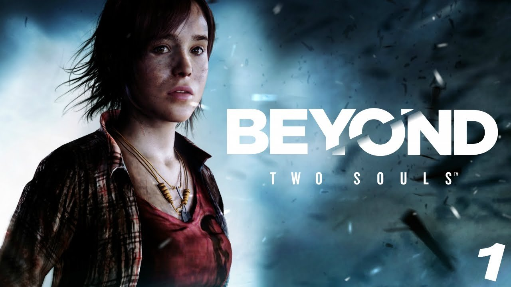

Beyond:Two Souls
08/01/2018
Beyond: Two Souls is an interactive drama action-adventure video game for the PlayStation 3 and PlayStation 4 home video game consoles, developed by Quantic Dream and published by Sony Computer Entertainment. It was released in October 2013. The game features Jodie Holmes, one of two player characters. The other is an incorporeal entity named Aiden: a separate soul linked to Jodie since birth. Jodie, who is portrayed by actress Ellen Page, possesses supernatural powers through her psychic link to Aiden, growing from adolescence to adulthood while learning to control Aiden and the powers they share. Willem Dafoe co-stars as Nathan Dawkins, a researcher in the Department of Paranormal Activity and Jodie's surrogate-father-figure. The actors in the game worked during the year-long project in Quantic Dream's Paris studio to perform on-set voice acting and motion-capture acting.